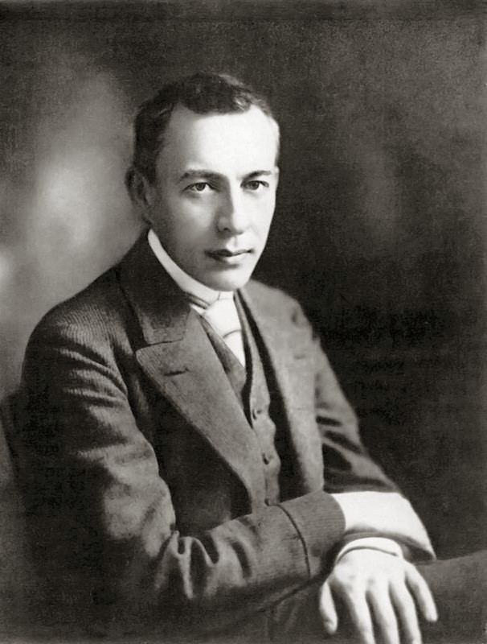
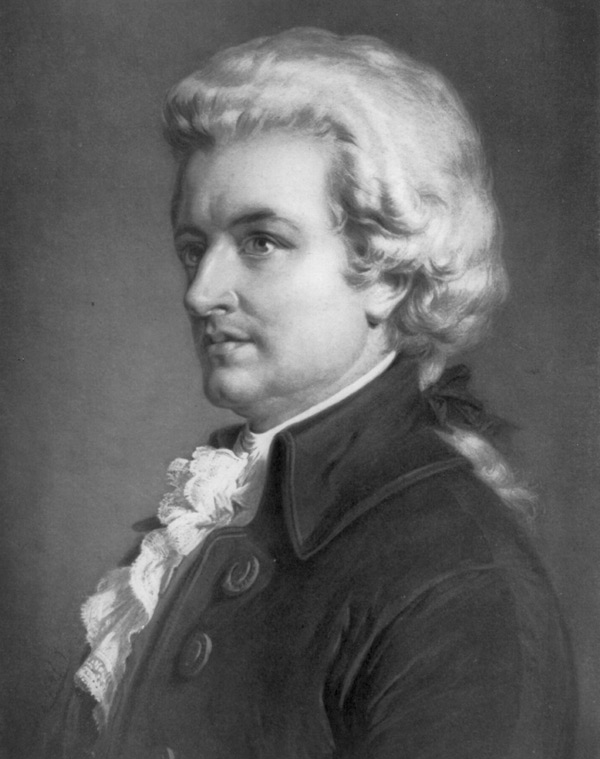
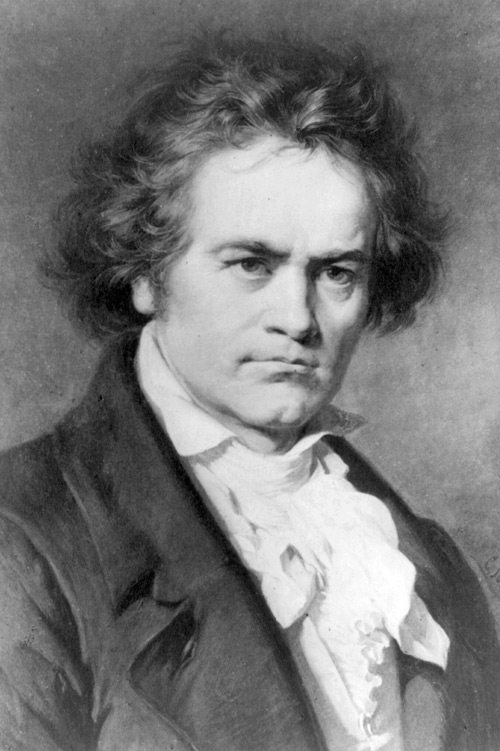

Famous Pianists
Frédéric Chopin

Chopin was a Polish composer and virtuoso pianist of the Romantic era, known for his expressive piano pieces.
Sergei Rachmaninoff
Rachmaninoff was a Russian pianist and composer famous for his lush harmonies and technically challenging works.
Wolfgang Amadeus Mozart
Mozart was a prolific Classical composer known for his brilliance in both piano and orchestral compositions.
Ludwig van Beethoven
Beethoven was a German composer who revolutionized piano music, bridging the Classical and Romantic eras.